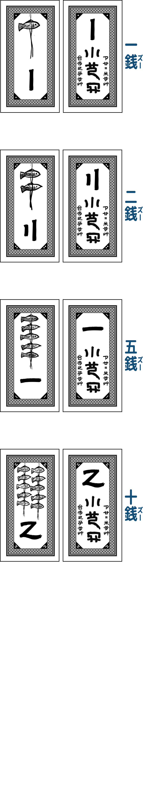
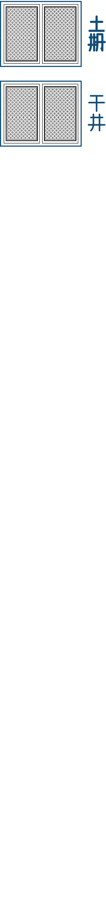
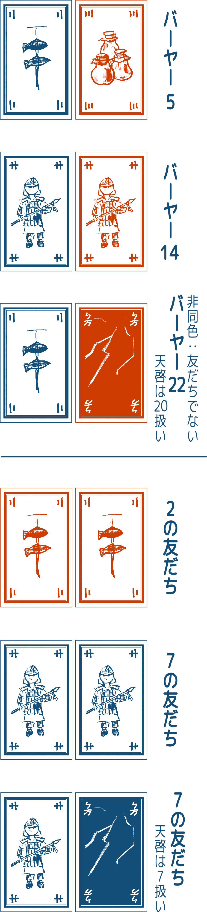
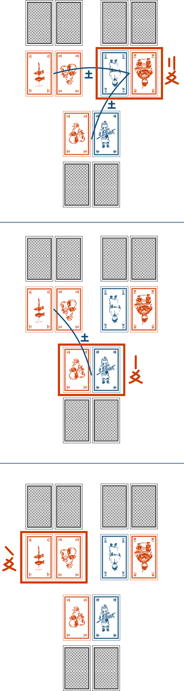

当連盟は「タクさんの木製ゲーム」の許可のもとこれを和訳し、販売しています。我等人等受衣足々木遊術之認使言将言筆此銭行。
プレーヤーは「大きい物は遠く、小さい物は近い」という言い伝えに出てくる賢者として王さまを助けます。手札を使って、「大きくて遠い」と「小さくて近い」の二つのセットを作ります。「大きくて遠い」セット、「小さくて近い」セットそれぞれを戦わせていき、ゲーム終了時に最もお金を集めたプレーヤーの勝利です。


一人以上のプレイヤーが下記の金額を獲得した際、ゲームが終了します。
全てのカードを混ぜて山札を作ります。全プレイヤーは五枚のカードを取って手札とします。
手札を使って二つのセットを作ります。一つのセットは二枚です。強いセットが「大きくて遠い」、弱いセットが「小さくて近い」です。同じ強さでも構いません。残ったカードは次のラウンドで使うことができます。全員が二つのセットを机に伏せて置きます。

セットの強さは以下の通りです。 セットには「友だち」と「バーヤー」があります。友だちは同じ色でかつ、同じ数字の二枚です。友だちは全てのバーヤーより強いです。※これは友だちには心の絆があるからです！ 友だち同士の強弱は合計値で決定します。バーヤーとは、友だちでないセットです。バーヤー同士の強弱は合計値で決定します。
「天啓」は同色にのみ使うことができるワイルドカードで、プレイヤーの意思に関係なく、そのセットが最大限の強さになるようなカードとみなします。

全員が強いセットを公開して「強いセットの点数」を決定します。図のように、あるセットの点数はそのセットより弱い、あるいは同じセットの個数です。

数え棒を使ってこれを一時的に記録します。同様に全プレイヤーが弱いセットを公開し点数を一時記録します。ある人の獲得額は強いセットの点と弱いセットの点を掛け算した額です。
使わなかった一枚を残し、使用されたカードを捨て札にします。捨て札と山札を集めてシャッフルし、新たに山札を作ります。
その後、全プレイヤーは四枚追加で（山札から）獲得します。まれに手札が六枚以上になりますが、その際はカードを好きに捨て札にして手札が五枚になるようにします。
セット作成→精算→手札処理からなるラウンドを繰り返します。先述の金額を獲得しているプレイヤーがいればゲームが終了します。
精算時、獲得額が零点のプレイヤーは賢者の腕輪トークンを一つ得ます。※これは賢者は過去を反省しそれに学ぶからです！ プレイヤーはいつでも使いたいときに腕輪トークンを捨てます。腕輪一つを捨てるごとに山札一枚を引きます。腕輪を複数捨てた場合はその数だけ山札を引きます。
強いセットと弱いセットがともに「友だち」のプレイヤーは光る龍の卵を獲得します。※これは良い王というのは友だちを重んじるはずだからです！ 他プレイヤーが卵を持っている場合はそれを獲得します。セット作成の後プレイヤーが卵を捨てた場合、他人の心を読むことができます。このとき、プレイヤーは強弱どちらかを宣言します。そうすると他プレイヤーの全ての強いセットか弱いセットが公開されます。
その後、プレイヤーは出したセットを全て戻して再びセット作成を行います。強弱セットがともに「友だち」のプレイヤーが複数いる場合は弱いセットがより強いプレイヤーが卵を獲得します。弱いセットも同じ場合卵は移動しません。
ゲームが長引きすぎて手札や腕輪を与える手段がない場合、ゲームは終了します。この時点で最もお金を集めたプレイヤーが勝利します。※これは人が行き来しなくなったり、反省が募りすぎたりすると賢者がストレスを受けるためです。これは国の崩壊の兆候ですが、富めるものは健康であるはずだからです！

このゲーム「光る龍の卵」はタクさんの木製ゲームが製作したものです。我々の許可なく作製して販売することを禁じます。 賭博をする際は喧嘩をせず、多くの金額を賭けないでください。（原文ママ。日本では賭博は刑罰の対象です。）